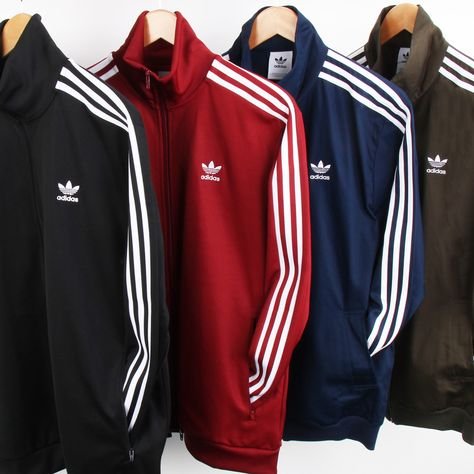
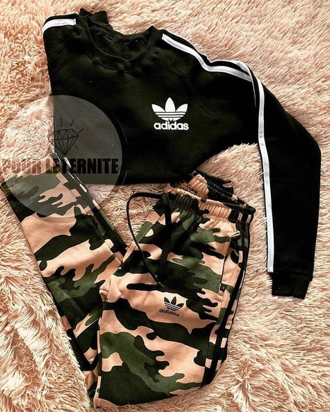

ABOUT THE STORE
Adidas (styled as “adidas” since 1949) is a prominent German manufacturer of athletic shoes and apparel, identified by its three-stripe trademark.
Sporting goods featuring the latest technologies, to up your performance. Beat your PB. adidas offers a home to the runner, the basketball player, the soccer kid, the fitness enthusiast.
Adidas shoes are made in three different locations. First, adidas shoes are designed and tested with different materials in the adidas HQ in Herzogenaurach, Germany. Then, most of the adidas shoe production is done in their manufacturing facility in Indonesia. Additionally, adidas has a “Speedfactory” in Bavaria, where high-speed production is based on and customized to athletes’ data.